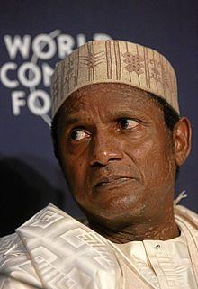

MUSA YARADUWA
- Umaru Musa Yar'Adua (16 August 1951[1] – 5 May 2010) was a Nigerian politician who was
the President of Nigeria from 2007 to 2010. He was declared the winner of the Nigerian presidential
election held on 21 April 2007,
and was sworn in on 29 May 2007.
-
He previously served as the governor of Katsina from 1999 to 2007; and was a member of the People's
Democratic Party (PDP). In 2009, Yar'Adua left for Saudi Arabia to receive treatment for pericarditis.
He returned to Nigeria on 24 February 2010, where he died on
-
He started his education at Rafukka Primary School in 1958, and moved to Dutsinma Boarding Primary
School in 1962. He attended the Government College at Keffi from 1965 until 1969. In 1971 he received a Higher School Certificate from Barewa College.[12] He attended Ahmadu Bello University in Zaria from 1972 to 1975, where he obtained a bachelor's degree in Education and Chemistry, and then returned in 1978 to
pursue a master's degree in Analytical Chemistry.[